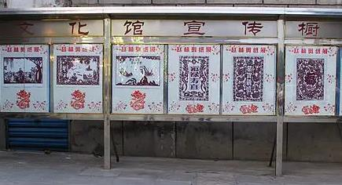
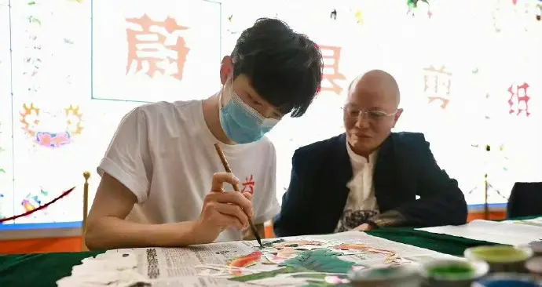

联系人：XXXX
电话：156-0000-0000
民间剪纸善于把多种物象组合在一起，并产生出理想中的美好结果。无论用一个或多个形象组合，皆是“以象寓意”“以意构象”来造型，而不是根据客观的自然形态来造型，同时，又善于用比兴的手法创造出来多种吉祥物，把约定成俗的形象组合起来表达自己的心理。追求吉祥的喻意成为意象组合的最终目的之一。地域的封闭和文化的局限，以及自然灾害等逆境的侵扰，激发了人们对美满幸福生活的渴求。人们祈求丰衣足食、人丁兴旺、健康长寿、万事如意，这种朴素的愿望，便借托剪纸传达出来。
民间剪纸《鹿鹤同春》是民间传统的主题纹样。据记载，鹤即“玄鸟”，玄鸟是“候鸟”总称。在民间文化中鹿称为“候兽”，鹤称为“候鸟”，鹿鹤同春是春天和生命的象征。民间鹿与禄同音，鹤又被视为长寿的大鸟，因此鹿与鹤在一起又有福禄长寿之意。在民间社会生产力相对低下的情况下，人力劳动成为生存的保证，摆脱病魔和死亡的痛苦是人们永恒的理想。民间剪纸以各种形式表达出对生命的渴望，袒护生命，颂扬生命，表现生的欢乐，对生命的崇拜成为人们虔诚的信仰。《鹰踏兔》是民间洞房的喜花之一，也是传统纹样，在民间流传极广。鹰喻“阳”，同鸡、鸟、鸦一样。在民间神化中称太阳为“三足鸟”，民间称太阳为“鸦”。兔寓意“阴”民间称月为兔。鹰踏兔暗喻男女情爱，反映了生殖崇拜的主题。民间剪纸中常见的坐帐花、喜花都以隐喻的方式表达出对生命繁衍生息的崇拜与追求。《扣碗》《抓髻娃娃》《鱼唆莲》等为主题的剪纸作品比比皆是。
在民间剪纸中有许多反映生产生活的画面，这些作品有着一个最大的相同点，就是对主体进行的夸大，大大的鱼、大大的辣椒、大大的蚕、大大的谷粒等，通过剪纸，人们虚构了美好的形象；来慰藉自己的心灵，来张扬人征服自然的伟大创造力，以期建立自己的理想世界，并肯定人的力量，鼓舞人们继续奋斗的勇气。